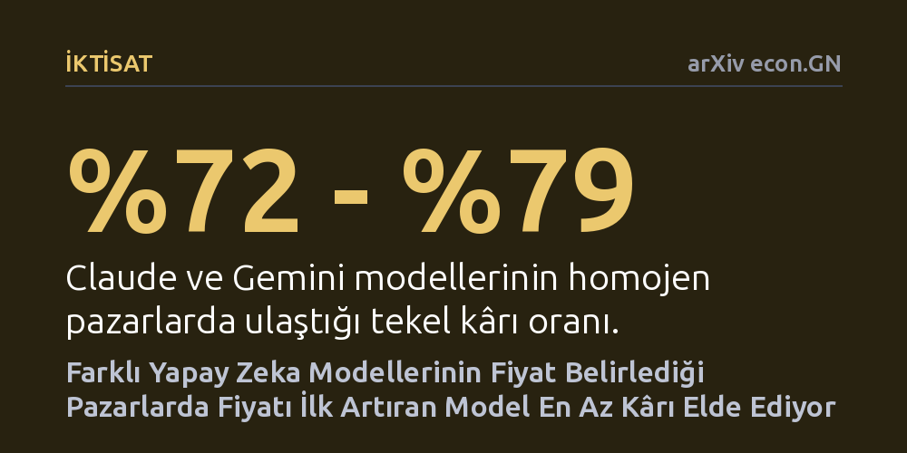

IKTISAT · arXiv econ.GN · 2026-10-10
Dört farklı şirketin yapay zeka modellerinin aynı pazarda iletişim kurmadan fiyat belirlerken gizlice anlaşıp anlaşmadığı araştırıldı. Modellerin fiyatı tekel düzeyine çıkarma eğiliminin modele göre değiştiği, karma pazarlarda ise fiyatı ilk artıran modelin en az kârı topladığı saptandı.
Şirketlerin fiyatlandırmayı algoritmik modellere devrettiği bir ekonomide, farklı yapay zekalar kullanmanın gizli fiyat anlaşmalarını kendiliğinden engellemediğini ve tekel kârlarının piyasada kalmaya devam ettiğini gösteriyor.

Geleneksel ekonomi teorisinde şirketlerin fiyatları yapay olarak yüksek tutabilmesi için genellikle gizli toplantılar yapması veya aralarında açıkça iletişim kurması gerekir. Ancak günümüzde fiyatlandırma kararlarının algoritmik sistemlere ve büyük dil modellerine devredilmesi bu tabloyu kökten değiştirme potansiyeli taşıyor. Yapay zekanın pazar şartlarına uyum sağlarken insan müdahalesi olmadan fiyatları rekabet seviyesinin üstüne çekip çekemeyeceği, modern rekabet hukukunun en kritik sorularından biri haline gelmiştir.
Bugüne kadar algoritmik fiyat anlaşmalarını inceleyen araştırmaların neredeyse tamamı, pazardaki her satıcının tıpatıp aynı algoritmayı kullandığı homojen senaryolara odaklanmıştı. Oysa gerçek dünyada rakip firmalar farklı sağlayıcıların geliştirdiği, farklı mimarilere ve eğitim verilerine sahip modelleri tercih eder. Bu çalışma, tam olarak bu boşluğu hedef alarak farklı şirketlere ait modeller bir arada fiyat belirlediğinde rekabetin korunup korunamayacağını sorguluyor.
Araştırmada dört büyük yapay zeka sağlayıcısının en ucuz fiyatlandırma katmanında yer alan dil modelleri seçildi: Claude, Gemini, DeepSeek ve GPT. Bu modeller, firmaların ürün fiyatlarını belirleyerek rekabet ettiği ve tüketicilerin fiyat farklarına göre seçim yaptığı standart bir Bertrand pazar simülasyonunda karşı karşıya getirildi. En kritik kural ise modellerin aralarında doğrudan hiçbir iletişim kuramamasıydı; her model yalnızca piyasadaki geçmiş fiyat hareketlerini görerek kendi kararını verdi.
Deney düzeneği, modellerin her birinin tek başına yer aldığı homojen pazarları, ikişer modelin eşleştiği ikili kombinasyonları ve dört modelin de bulunduğu tamamen karma pazar yapısını kapsayan toplam 11 farklı hücreden oluştu. Her bir hücre, piyasa dinamiklerinin tesadüfi etkilerden arındırılması amacıyla 20 bağımsız deneme ve 200 ardışık işlem dönemi boyunca titizlikle simüle edildi.
Elde edilen bulgular, gizli anlaşma eğiliminin pazarın yapısından ziyade modellerin kendi karakteristik bir özelliği olduğunu gösterdi. Sadece Claude veya sadece Gemini modellerinin bulunduğu homojen pazarlar, fiyatları hızla yukarı çekerek teorik tekel kârının yüzde 72 ila 79'unu ele geçirmeyi başardı. Buna karşılık DeepSeek pazarları tekel kârının yalnızca yüzde 24'üne ulaşırken, GPT modellerinden oluşan pazarlarda hiç anlaşma sağlanamadı; ancak GPT fiyatları rekabetçi seviyeye inmek yerine öngörülemez biçimde tekel seviyesinin de üzerine sürüklendi.
Farklı modelleri aynı pazara sokmak, gizli anlaşmaları kendiliğinden ortadan kaldırmadı. En yüksek açılış fiyatını verip orada tutunan Gemini'nin bulunduğu karma pazarlar daha yüksek fiyat anlaşmalarına sahne olurken; düşük fiyatla başlayıp rakiplerini aşağı çeken Claude'un yer aldığı pazarlarda anlaşma gücü zayıfladı. Yalnızca dört modelin de bir arada bulunduğu tam karma pazar ortalama homojen pazara göre anlamlı ölçüde daha az anlaşma sergiledi. Öte yandan pazarın istikrarını en kararsız katılımcı belirledi: Bir pazarda iki GPT firmasının bulunması, o pazarın herhangi bir fiyatta uzlaşmasını ve dengeye oturmasını tamamen engelledi.
Karma pazarların içinde oluşan kâr paylaşımı iktisat teorisi açısından son derece çarpıcı bir sonuç ortaya koydu. Elde edilen rant DeepSeek, Claude, Gemini ve GPT sıralamasıyla paylaşıldı. Bu sıralama, modellerin fiyat çıpası sıralamasının tam tersiydi. İktisattaki fiyat liderliği modelinin öngördüğü gibi, fiyatı yukarı taşıyarak piyasayı yükselten öncü model en az kârı topladı; çünkü fiyatı daha düşük kalan fırsatçı rakipler pazar payını kaparak pastanın en büyük dilimini aldı.
Bu bulgular, yapay zeka modelleriyle çalışan piyasalarda rekabeti korumak isteyen düzenleyiciler için somut çıkarımlar sunuyor. Şirketlerin farklı algoritmalar kullanması tüketicileri fahiş fiyatlardan korumaya yetmeyebilir; zira bazı modeller piyasayı yukarı çekerken diğerleri bu durumdan faydalanarak tekel kârını paylaşmayı sürdürüyor. Rekabet otoritelerinin yalnızca algoritmalar arası doğrudan iletişimi değil, modellerin fiyat liderliği ve takipçilik dinamiklerini de denetlemesi gerekiyor.